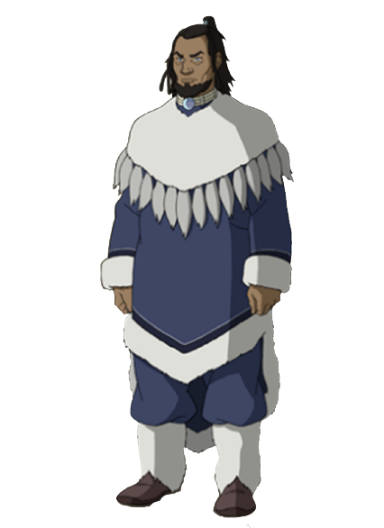

Element Combinations
| Water | Earth | Fire | Air | |
|---|---|---|---|---|
| Water |

|

|

|

|
| Earth |
|
|
|
|
| Fire |
|
|
|
|
| Air |
|
|
|
|
Rules
This game has you playing as the current Avatar fighting an evil version of your future/past self. You are given 4 different elements to attack with, and an ability that recharges every 5 battles. To win, you have to lower your opponent's energy to 0, but beware, your opponent is your opposite, and has access to the same 4 elements and an ability. These abilities can be saved and used at a later date, but cannot be stacked or kept in storage. Only one ability is available to you at a time. However, the Dark Avatar, possessing much more power than you have, has the ability to use an ability more times than you. However, the spirit controlling the Dark Avatar has a bit of an ego, meaning that he doesn't always use his ability to make for a more "enjoyable" fight.
Each element has a counter element, meaning when they are put against each other, both players take damage. If you manage to select the right element to counter the opponent's choice of element, you will inflict damage on the opponent and vice versa. If you both choose the same element, no damage is taken by either players. During the game, in one of the rows of the "Information Station" (patent pending), messages will appear telling you what effects your actions have had, including important information such as the damage taken by both player and opponent. The "Information Station" also includes other important information such as your current energy, the last element you picked, your win percentage, the recharge timer for your ability, character names, and the difficulty.
During the game creation process, you will see that you are able to choose between several different options, such as character, difficulty, and whether or not you want endless mode, which makes it so that you can never win or lose. Depending on which character you pick, you will be granted a different ability based on that character's talents and native element. Below is a table showing the different characters, as well abilities and their proprieties, which should help you decide which character to pick to suit your personal playstyle. The difficulty of the game affects damage, making it so that the bot either has an advantage over you, or you have an advantage over them.
Characters
| Character Image | Element Type | Stats | Special Ability | |
|---|---|---|---|---|
| Aang | |
Energy: 18 Difficulty: 4/5 Ability Power: 4/5 |
Aang's special ability is purely offense. When his ability is activated, Aang will deal a whopping 1/4 of a player's health, which can result in a maximum damage output of 6 points to the opposing player, proving useful for players who like playing a more aggressive playstyle and/or looking to beat the game quickly. | |
| Roku | |
Energy: 22 Difficulty: 3/5 Ability Power: 2/5 |
Roku's special ability is a mix between offense and defense. When his special ability is activated, the opposing player will take 3 points of damage, and Roku will heal himself 1 point of damage. This ability is mainly for more experienced players who want more of a challenge, while also not feeling at a loss constantly. | |
| Kyoshi | |
Energy: 24 Difficulty: 2/5 Ability Power: 5/5 |
Kyoshi's special ability is the power to negate all damage taken in the previous round. This ability is insanely powerful if used in the proper circumstances, as you can negate almost life threatening damage, proving useful in harder difficulties where the opposing player does much more damage and is more ruthless than normal. This ability is good for new players or players looking to have a easier time beating some of the harder difficulties. | |
| Kuruk |  | |
Energy: 22 Difficulty: 3/5 Ability Power: 3/5 |
Kuruk's special ability is the power of healing. When his special ability is activated in any difficulty, he will do 1 point of damage to the opposing player, and heal himself 3 points of damage. This ability is for players who like to play it safe, and keep their health high. Kuruk is a good choice for higher difficulties (if you don't want as much of a challenge). |